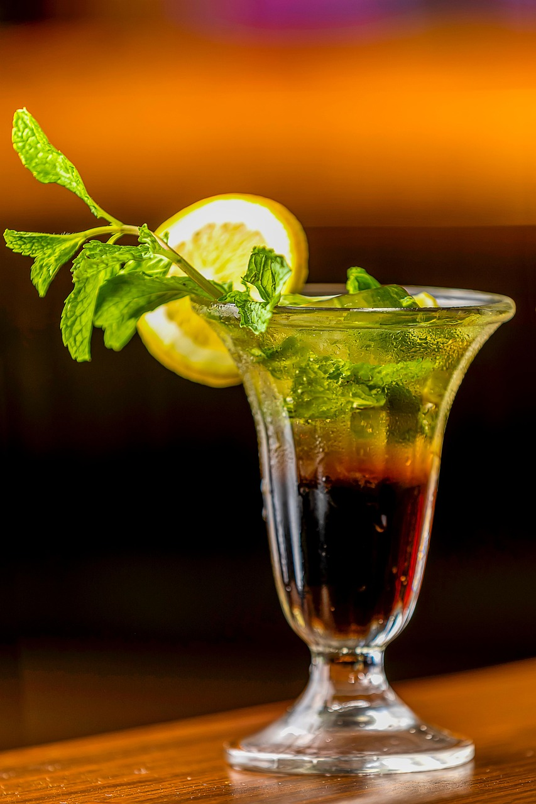
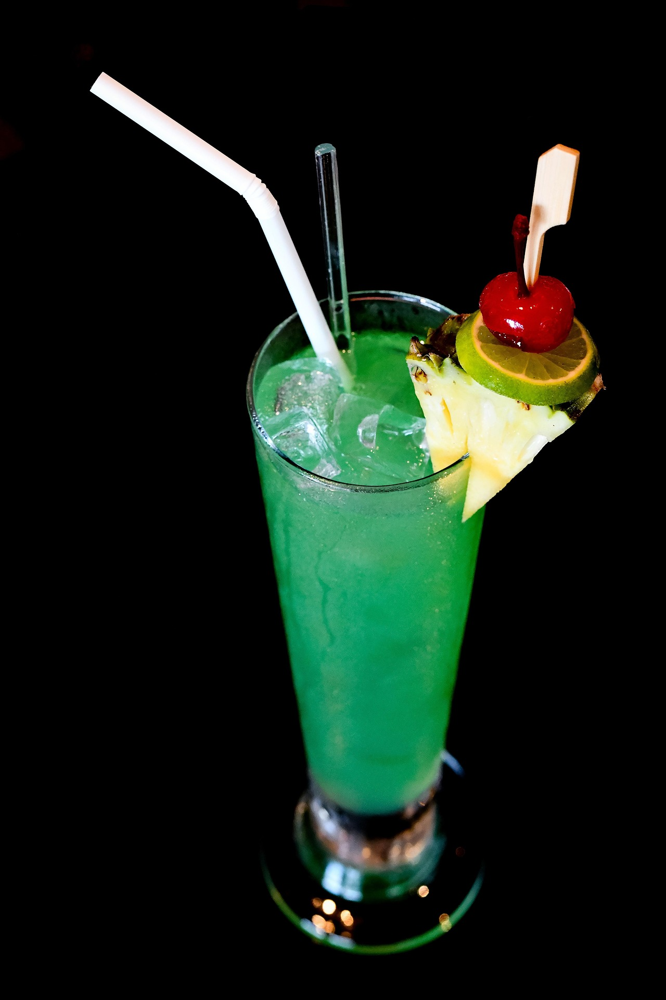

Biryani
Biryani is a mixed rice dish originating in South Asia, made with rice, meat (chicken, goat, lamb, beef) or seafood (prawns or fish), and spices.
Chicken Lollipop
Restaurant Style Lollipop Chicken is a spicy chicken drumsticks coated in finger licking marinate and fried till crispy.
Fried rice
Fried rice is a popular dish made by stir-frying cooked rice with ingredients like vegetables, eggs, meat, or seafood. It’s seasoned with soy sauce, garlic, and other spices.

Pizza's
Pizza is a delicious dish loved globally. Tangy tomato sauce, and gooey cheese, it's endlessly customizable—topped with veggies, meats, or pineapple (if you're brave!).
Burger
A burger is a savory sandwich made with a grilled patty—typically beef or chicken—served inside a sliced bun. It's often layered with lettuce, tomato, cheese, onions, and condiments like ketchup or mayo.

Butter Naan
Butter naan is a soft, leavened Indian flatbread, cooked in a tandoor (clay oven) and brushed generously with melted butter.
Beer's
Beer is a fermented beverage enjoyed worldwide, crafted from water, barley, hops, and yeast. It comes in styles like lagers and ales, each offering unique flavors and aromas.
Wine
Wine is an elegant, time-honored drink made from fermented grapes, with red, white, and rosé varieties offering distinct tastes. From fruity and floral to earthy and bold.
Whisky
Whisky, often called the "water of life," is a bold, aged spirit distilled from grains like barley, rye, or corn. Crafted with precision and patience, it’s matured in oak barrels, absorbing rich aromas and smoky flavors.

Cocktails's
Cocktails are stylish, mixed drinks blending spirits with juices, syrups, bitters, or soda for dynamic flavor and flair. From classics like the Mojito and Martini to modern creations, they showcase creativity.

Mocktail's
Mocktails are vibrant, non-alcoholic drinks that mix juices, herbs, soda, and syrups to deliver refreshing flavors without the booze. They’re perfect for anyone seeking a stylish sip with flair and creativity.
Jucies
Juices are nature’s refreshment-extracted from fruits and vegetables.Each juice offers unique taste profiles and health benefits.